title: "Georgia Chalvatzaki (TU Darmstadt): Reinforcement Learning From, For and With Demonstrations" tags: - youtube - 연구자료 source: "https://www.youtube.com/watch?v=ieStIXBGriU" channel: "Zhanpeng He" video_id: "ieStIXBGriU" date: 2026-08-08
Georgia Chalvatzaki (TU Darmstadt): Reinforcement Learning From, For and With Demonstrations
영상 정보
- 채널: Zhanpeng He (ICRA 2026 RL4IL 워크샵)
- 게시일: 2026-06-08
- 길이: 30분 45초
- 링크: https://www.youtube.com/watch?v=ieStIXBGriU
<div relative; width: 100%; padding-bottom: 56.25%; height: 0; overflow: hidden;"> <iframe absolute; top: 0; left: 0; width: 100%; height: 100%;" src="https://www.youtube.com/embed/ieStIXBGriU" frameborder="0" allowfullscreen></iframe> </div>
한줄 요약
"모방학습은 정책을 과소결정한다"는 명제에서 출발해, 데모가 주지 못하는 세 가지(규모 있는 데이터 / 데이터를 넘어서는 개선 / 접촉 감각)를 각각 다른 연구로 메운다. 형태학적 대칭을 등변성으로 심고, RL과 준최적 컨트롤러로 데모를 합성하며, 자기지도 다중감각 사전학습으로 접촉을 다룬다. 실기 원격조작 데이터 없이 zero-shot 80%를 달성한 결과가 근거다.
핵심 장면 분석
00:01:40 — 1966년의 가정용 로봇, 그리고 완전 원격조작
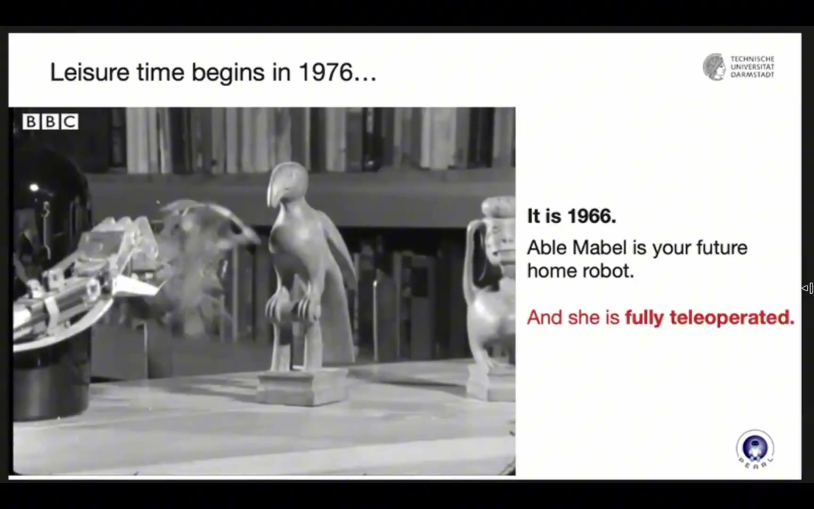
BBC 흑백 영상으로 시작하는 농담이 곧 논지가 된다. "1966년입니다. Able Mabel은 당신의 미래 가정용 로봇입니다. 그리고 그녀는 완전히 원격조작됩니다." Chalvatzaki의 지적은 뼈아프다. 60년이 지난 지금도 우리는 여전히 원격조작 데이터로 화려한 가정용 로봇을 선보이고 있다.00:02:20 — 인간 지능은 구조화되어 있다
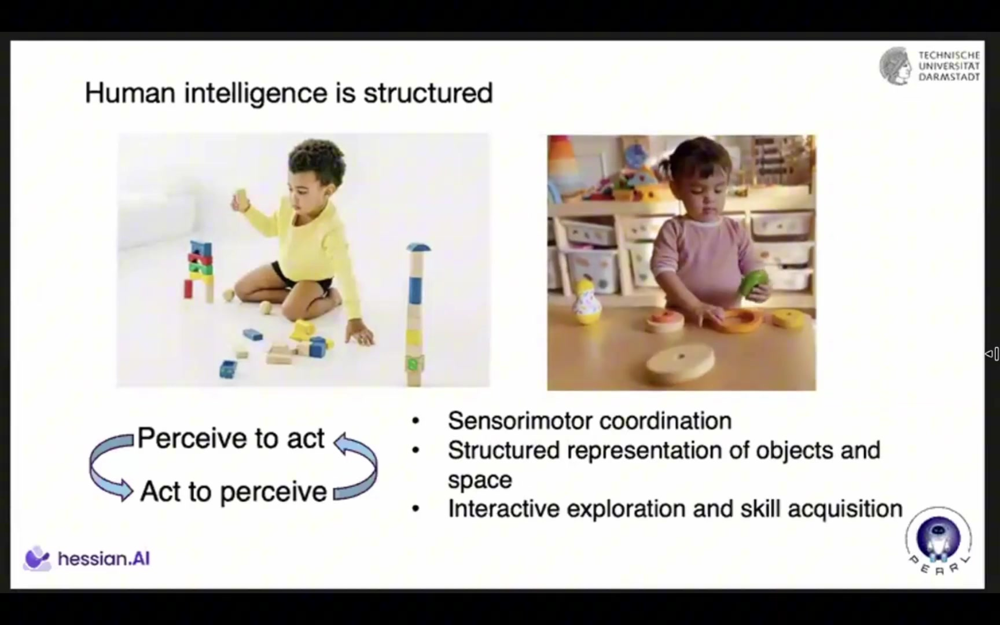
대조군은 아이다. 인간은 행동하기 위해 지각하고, 지각하기 위해 행동한다. 우리는 원격조작되지 않으며, 우리가 모방하는 방식은 우리가 로봇에게 강요하는 방식과 다르다. 자기 능력을 탐색해 감각운동 협응을 만들고, 객체와 공간의 구조적 표현을 세우며, 상호작용적 탐색으로 새 기술을 얻는다. 모방은 주로 자기 목표를 정의하는 수단으로 쓰인다.00:03:50 — 모방학습은 정책을 과소결정한다
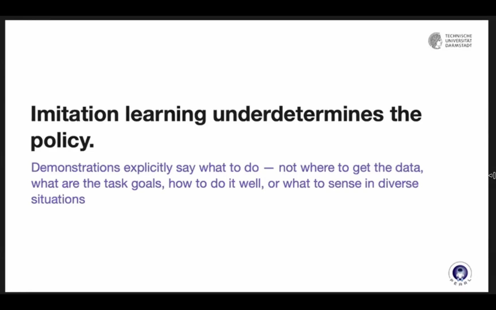
발표의 중심 명제다. 데모는 "무엇을 하라"만 명시적으로 말해줄 뿐, 데이터를 어디서 얻을지, 과제의 목표가 무엇인지, 어떻게 해야 잘하는 것인지, 다양한 상황에서 무엇을 감지해야 하는지는 말해주지 않는다.00:04:40 — 데모만으로는 얻을 수 없는 세 가지
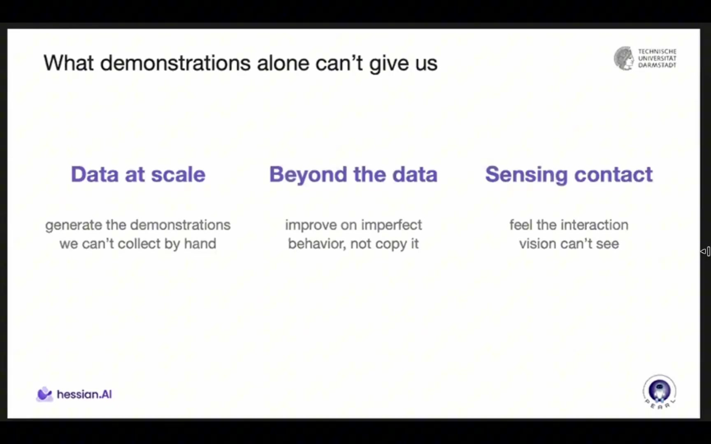
발표의 구조가 여기서 확정된다. ① 규모 있는 데이터 — 손으로 수집할 수 없는 데모를 생성해야 한다. ② 데이터를 넘어서기 — 불완전한 행동을 복제하지 말고 개선해야 한다. ③ 접촉 감지 — 비전이 볼 수 없는 상호작용을 느껴야 한다. 개발자가 오른손잡이라는 이유로 로봇을 양손잡이가 아니게 만들 이유는 없다는 비유가 인상적이다.00:05:30 — 첫 번째 축: 규모 있는 데이터
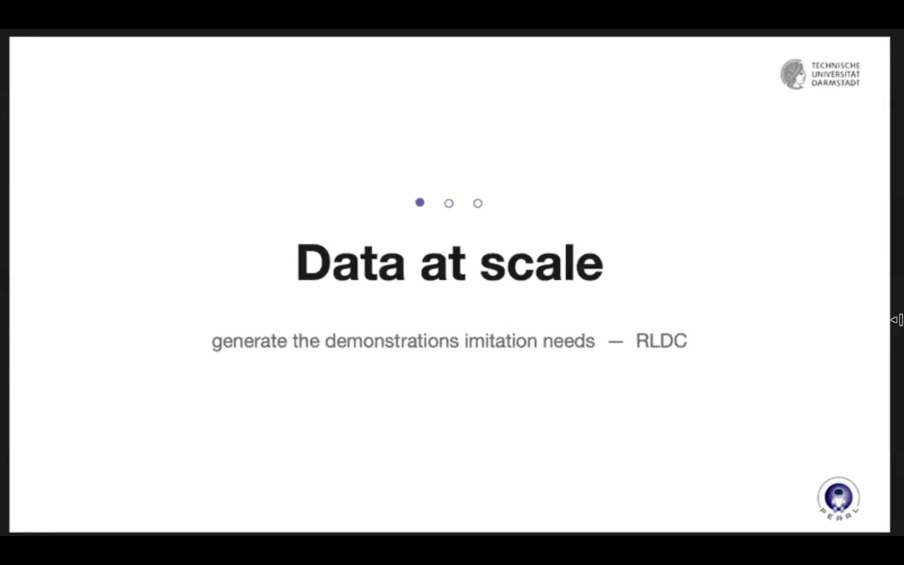
"모방학습이 필요로 하는 데모를 직접 생성하자"는 방향 선언이다.00:06:20 — SYMDEX: 귀납 편향으로서의 대칭
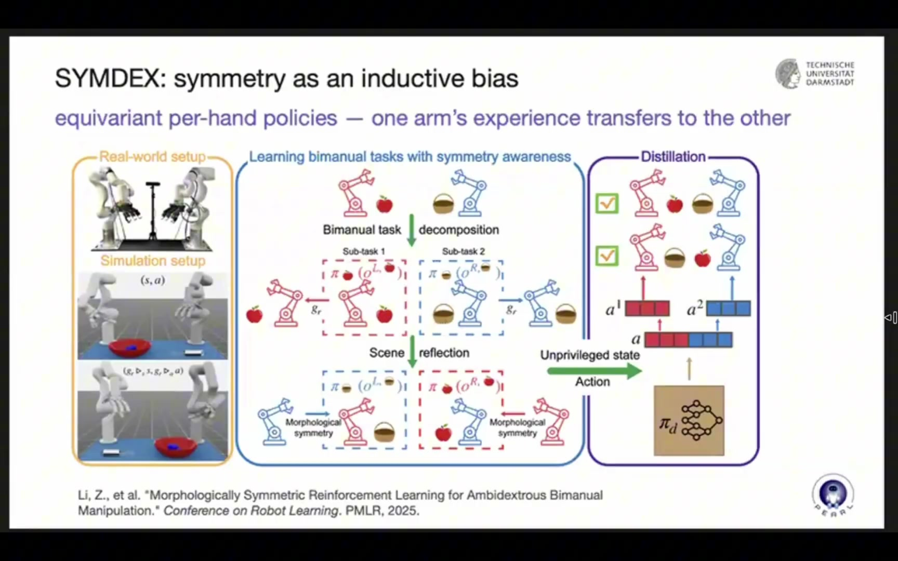
양팔 로봇은 양측 대칭(bilateral symmetry) 이라는 형태학적 구조를 이미 가지고 있다. 이를 등변 네트워크로 심으면 한 팔의 경험이 다른 팔로 전이된다. Allegro 손을 단 고자유도 양팔 시스템에서 상자 들기 같은 대칭 과제와, 공과 거품기를 가져와 젓기 시작하는 비대칭 과제를 다룬다.00:08:30 — 분해하고 증류하기
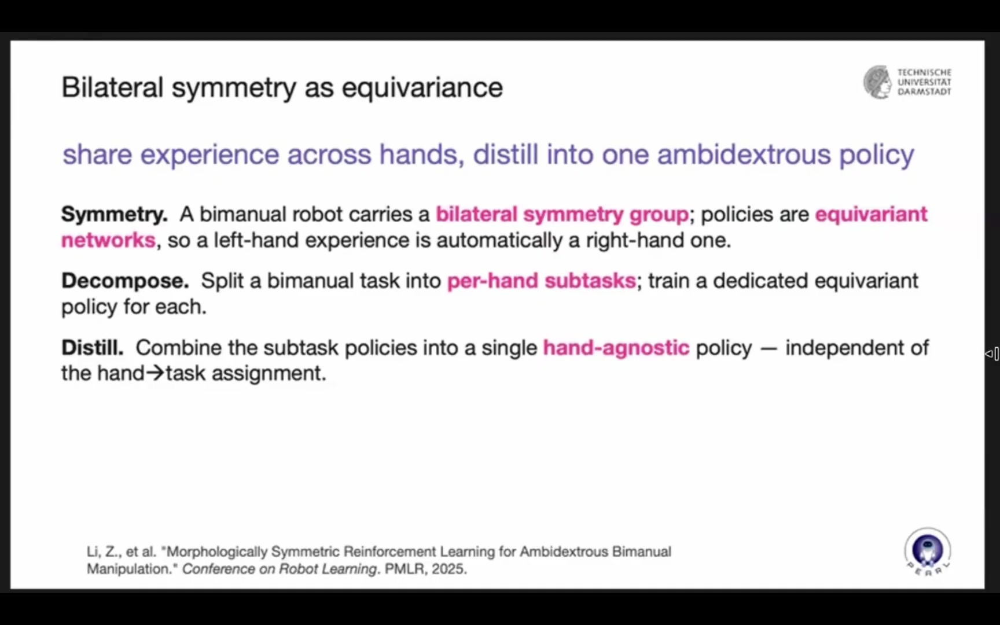
전체 레시피가 세 단어로 정리된다. Symmetry(양팔 로봇은 양측 대칭군을 가지므로 정책을 등변 네트워크로 두면 왼손 경험이 자동으로 오른손 경험이 된다) → Decompose(양팔 과제를 손별 하위 과제로 쪼개 각각 전용 등변 정책을 학습) → Distill(하위 과제 정책들을 손-과제 배정과 무관한 단일 hand-agnostic 정책으로 증류). 이렇게 하면 전역 조정자가 장면의 기하만 보고 어느 팔이 무엇을 할지 판단한다. "거품기는 왼쪽에 있다"고 사람이 알려줄 필요가 없다.00:09:20 — 대칭이 사주는 것
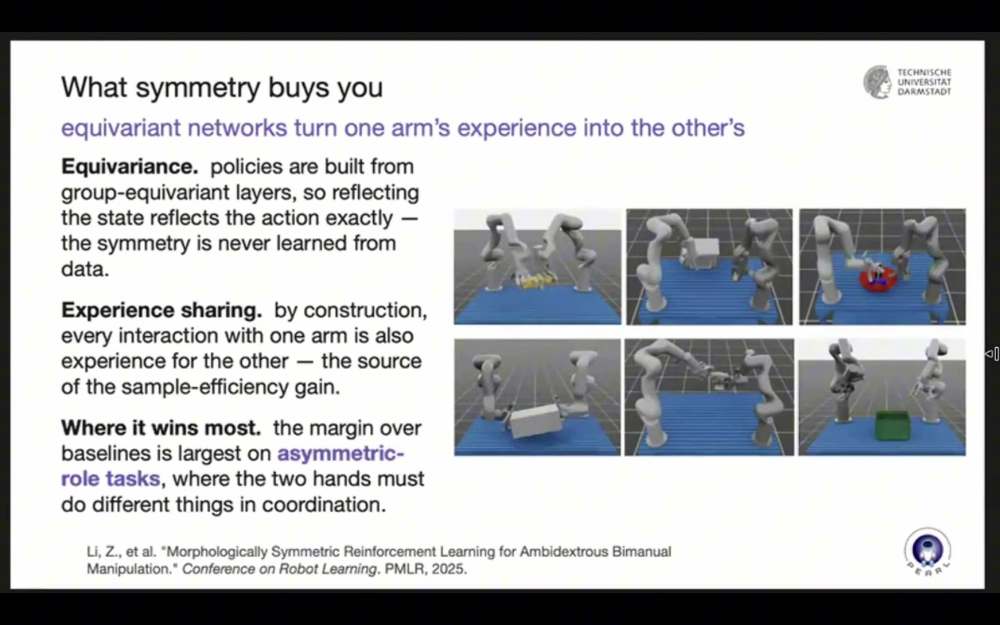
이득이 세 항목으로 정리된다. 등변성은 아키텍처(군-등변 층)에 내장되므로 데이터로 학습되지 않는다(학습하려 들면 샘플 비용이 크다). 경험 공유는 구조상 모든 상호작용이 두 팔 모두의 경험이 되게 하며 이것이 표본 효율의 원천이다. 가장 크게 이기는 지점은 두 손이 서로 다른 복잡도의 일을 해야 하는 비대칭 역할 과제다.00:10:00 — 하나의 양손잡이 정책
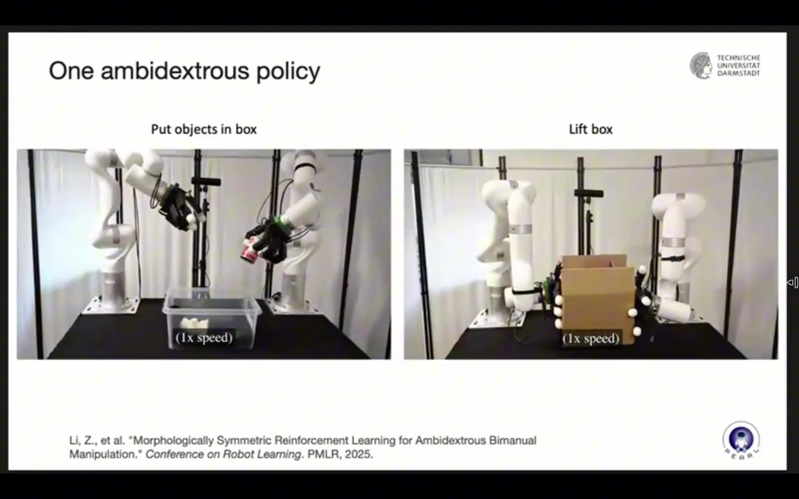
실물 결과다. 같은 정책이 상자에 물건을 넣고, 상자를 든다. 이 접근은 embodiment 확장도 가능하게 해서 두 팔에서 네 팔로 대칭 인지 조정을 넓힐 수 있다. 실세계 전이는 FoundationPose로 객체 자세를 추출해 zero-shot으로 이루어졌다.00:12:20 — RL로 합성 데이터 생성하기
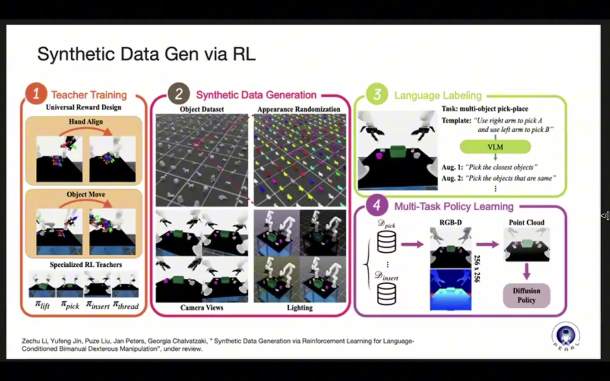
데이터 생성 파이프라인 네 단계다. ① 교사 학습(범용 보상 설계) → ② 합성 데이터 생성(객체 데이터셋, 외양 랜덤화, 카메라 뷰, 조명) → ③ 언어 라벨링 → ④ 멀티태스크 정책 학습(RGB-D와 포인트 클라우드 입력, diffusion policy). 특히 ③이 독특하다. 과제를 템플릿화한 뒤 LVLM이 장면과 원래 지시를 보고 같은 뜻의 여러 표현을 생성하게 해서, 언어 조건부 정책이 표현 변화에 강해지도록 만든다.00:13:00 — 일반화 가능한 보상 설계
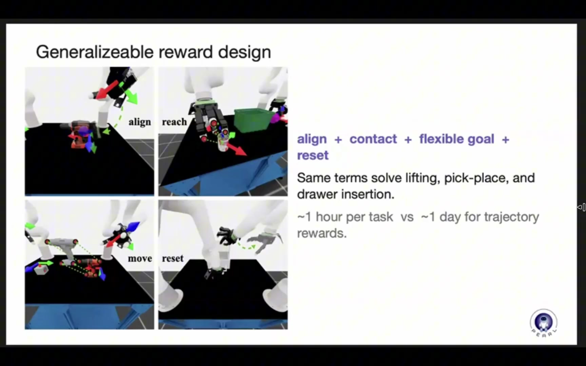
보상 엔지니어링 부담을 줄이는 핵심이다. 보상을 align + contact + flexible goal + reset 네 항으로 구성한다. align/reach는 손이 정렬해야 할 키포인트(affordance로 볼 수 있고 인간 데모에서도 얻을 수 있다), goal은 종료 시 객체의 목표 자세, reset은 일반적인 조건이다. 같은 항들이 들기·pick-and-place·서랍 삽입을 모두 푼다. 효과는 시간으로 환산된다. 과제당 약 1시간 대 궤적 기반 보상의 약 1일.00:14:40 — 미지의 객체로 zero-shot
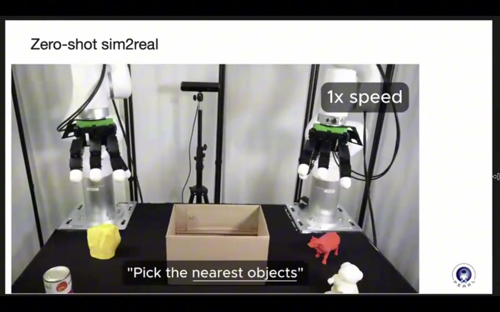
"Pick the nearest objects"라는 지시로 실기에서 동작한다(1배속). 학습 중 본 적 없는 객체들이며, 배포된 것은 RL 궤적에서 증류된 정책이다.00:16:40 — 두 번째 축: WBC는 만능이 아니다
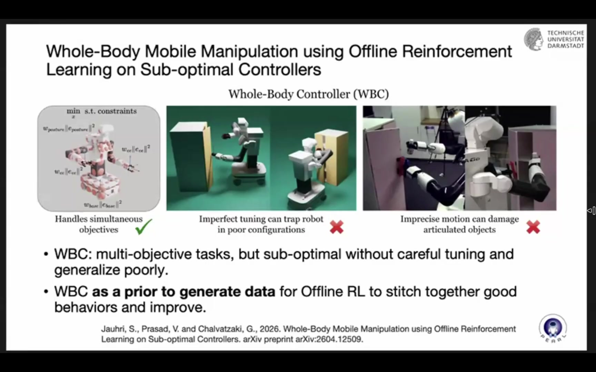
모델 기반 진영의 "전신 제어(WBC)면 다 된다"는 주장에 대한 반박이다. WBC는 동시 목적을 다루는 데는 강하지만(✓), 불완전한 튜닝이 로봇을 나쁜 자세에 가둘 수 있고(✗) 부정확한 동작이 articulated 객체를 파손할 수 있다(✗). 고자유도에서는 가중치를 매우 잘 맞춰야 하고, 장기 과제라면 단계를 수동으로 나눠 가중치를 재조정해야 한다. 그래서 결론이 이렇게 된다. WBC를 최종 해가 아니라 데이터를 생성하는 사전(prior)으로 쓰고, 오프라인 RL이 좋은 거동을 이어 붙여 개선하게 하자.00:17:30 — WHOLE-MoMa 파이프라인
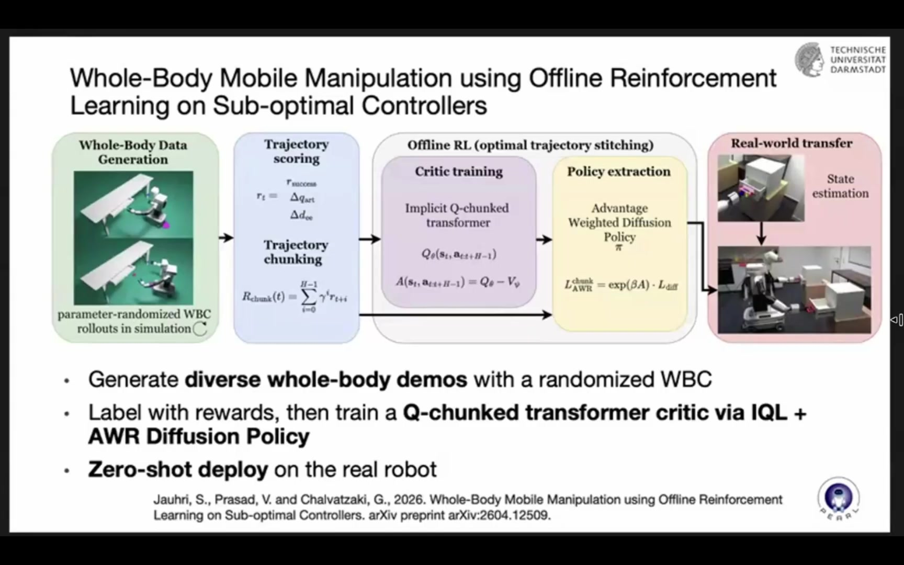
네 단계다. 랜덤화된 WBC로 다양한 전신 데모 생성 → 궤적 점수화 → 오프라인 RL로 최적 궤적 이어 붙이기 → 실기 전이. 알고리즘 선택이 구체적이다. 양팔 모바일 조작 로봇에서는 SOTA인 IDQL이 오히려 준최적이었고, Q 함수를 chunked 트랜스포머 크리틱으로 두고 IQL로 학습한 뒤 AWR로 정책을 추출하며 정책 자체는 diffusion transformer로 두는 조합이 최선이었다. 근시안적 최적화기를 credit assignment를 다루는 전방 예측 정책으로 바꾸는 것이 요점이다.00:19:50 — 시뮬레이션 비교: 네 방법
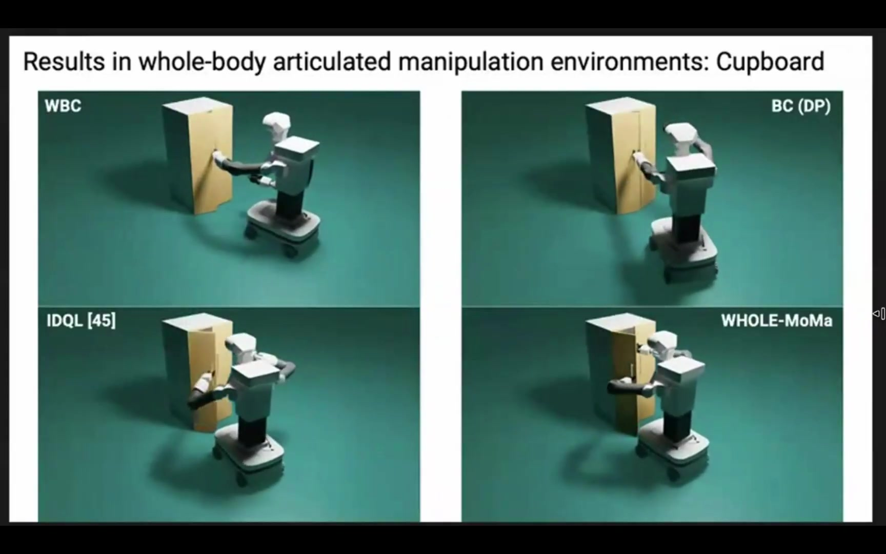
캐비닛 과제에서 WBC, BC(diffusion policy), IDQL, WHOLE-MoMa를 나란히 놓는다. WBC는 풀긴 하지만 팔이 완전히 뻗어 특이점에 가까운 자세로 가고, BC는 좋은 궤적 부분집합으로 학습해도 성능이 나쁘며, IDQL은 기대에 못 미쳤다.00:20:40 — 실기: WBC 기반 정책은 손잡이를 부순다
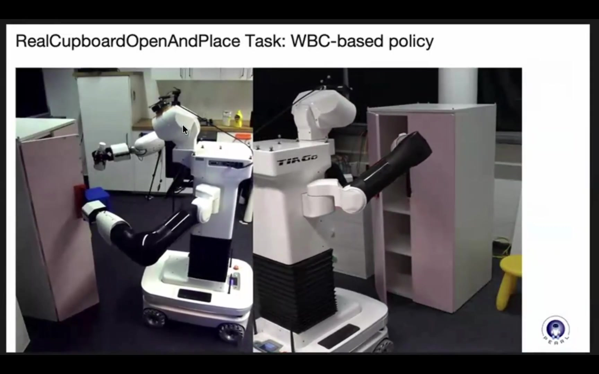
실제 로봇에서 이 과제에 맞춰 튜닝된 WBC 정책은 손잡이를 사실상 파손한 뒤 어색한 기구학 해로 떨림을 동반해 작업을 마친다. 로보틱스 종사자라면 모터에 좋을 리 없다는 것을 안다. 순수 모방학습(diffusion policy)도 공격적이어서 articulated 객체의 손잡이를 계속 부쉈다고 보고한다.00:21:20 — 실기: WHOLE-MoMa
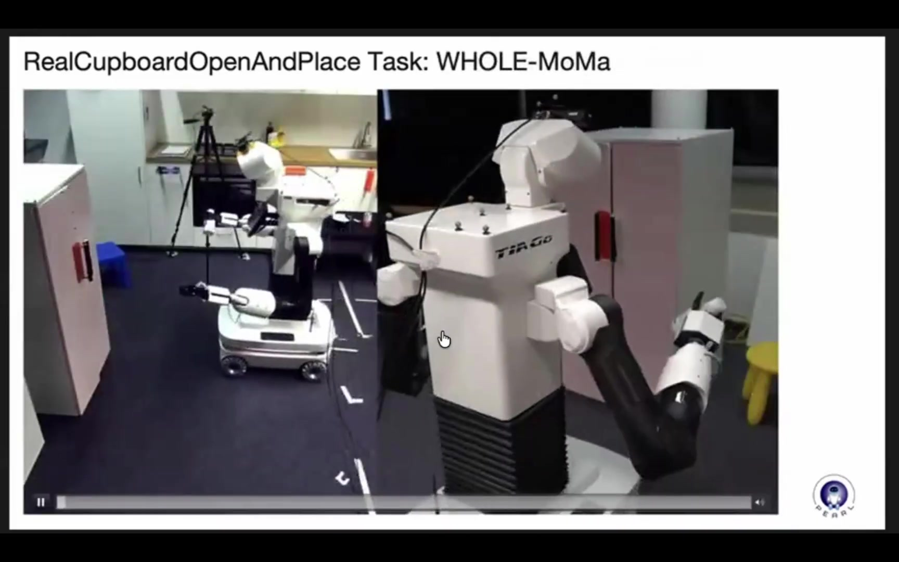
같은 과제에서 WHOLE-MoMa는 명시적으로 지시받지 않았음에도 관절 각도를 좋게 유지하며 조심스럽게 문을 연다. 오프라인 RL이 준최적 데이터에서 "좋은 부분"만 이어 붙인 결과다.00:22:00 — 강건성 시연
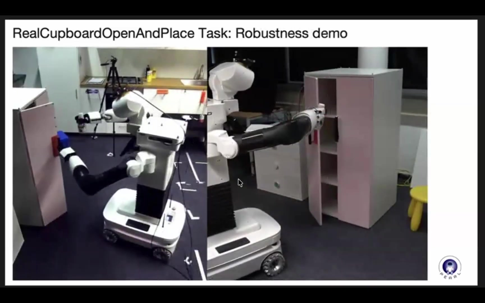
사람이 로봇 손에서 손잡이를 빼앗아도 로봇은 당황하지 않고 다시 잡고 작업을 이어간다. 한 서랍을 닫으면서 다른 서랍을 여는 과제도 수행한다.00:22:50 — 원격조작 없이, 실세계 데이터 없이
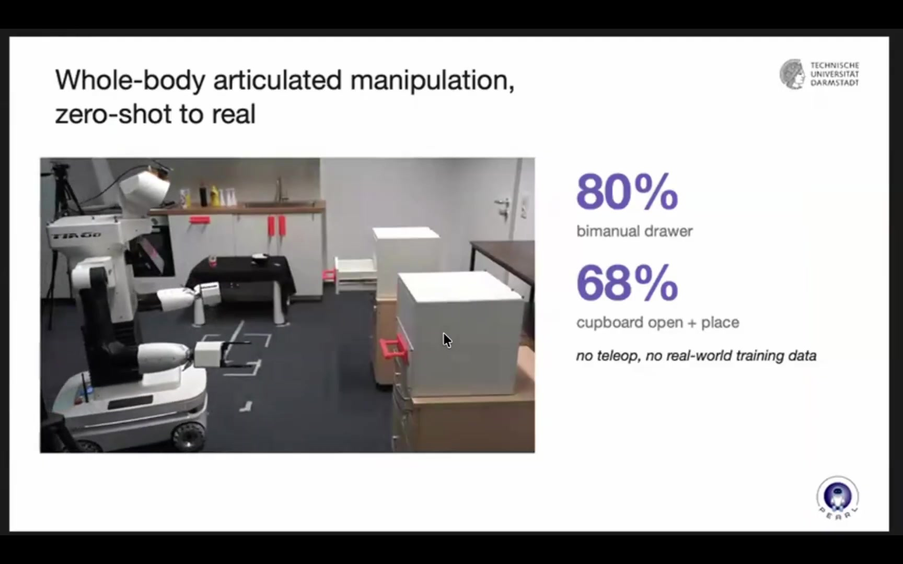
정량 결과다. 양팔 서랍 80%, 캐비닛 열고 물건 넣기 68%. 결정적인 단서가 아래에 붙는다. "원격조작 없음, 실세계 학습 데이터 없음." 전부 시뮬레이션의 준최적 컨트롤러 데이터에서 나왔고 실기에는 zero-shot으로 배포됐다.00:24:20 — 세 번째 축: 접촉을 감지하기
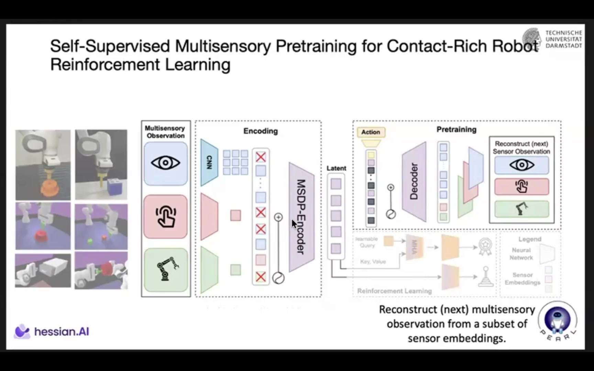
힘/토크 정보를 정책 학습에 직접 융합하면 잘 되지 않는다. 탐색 중에는 힘/토크 센서를 자주 쓰지 않게 되므로 비전에 과도하게 의존하거나 과제를 아예 못 풀게 된다. 해법은 자기지도 사전학습이다. 아이들의 학습에서 영감을 받아 과제와 무관한 무작위 놀이 데이터를 모으고, 일부 센서 임베딩만으로 (다음) 다중감각 관측을 재구성하는 것을 주 목표로 인코더를 사전학습한 뒤 동결해 하류 과제에 쓴다.00:25:00 — 비대칭 학습: 크로스 어텐션은 크리틱에
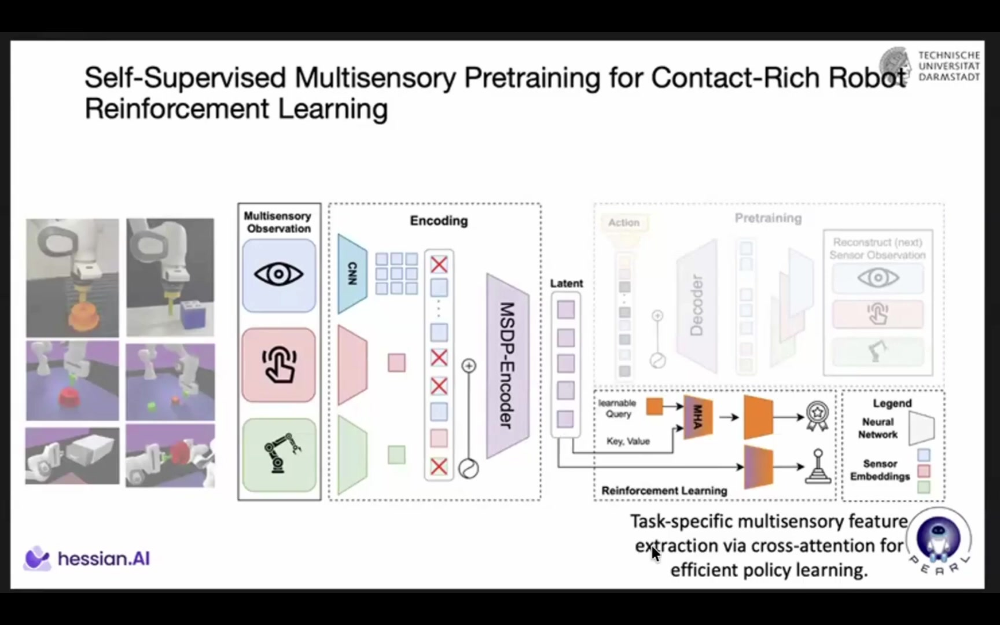
설계상의 핵심 발견이다. 잠재 임베딩을 정책에 그냥 넣으면 작동하지 않았다. 학습 가능한 쿼리와 크로스 어텐션을 크리틱 쪽에 두는 비대칭 학습이 최선이었다. 크리틱은 감각 정보에서 과제 해결에 중요한 것에 집중하고, 정책은 모든 스트림을 보되 과도하게 제약되지 않는다. 동역학을 크게 랜덤화했기 때문에 정책이 과제의 특정 성질에 둔감하게 남는 편이 유리했다.00:25:50 — 접촉 풍부 조작 벤치마크
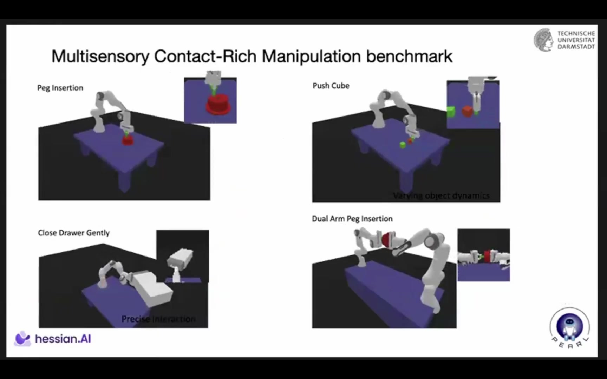
평가 과제들이다. Peg Insertion, Push Cube, Close Drawer Gently, Dual Arm Peg Insertion.00:26:40 — 의도하지 않은 강건성
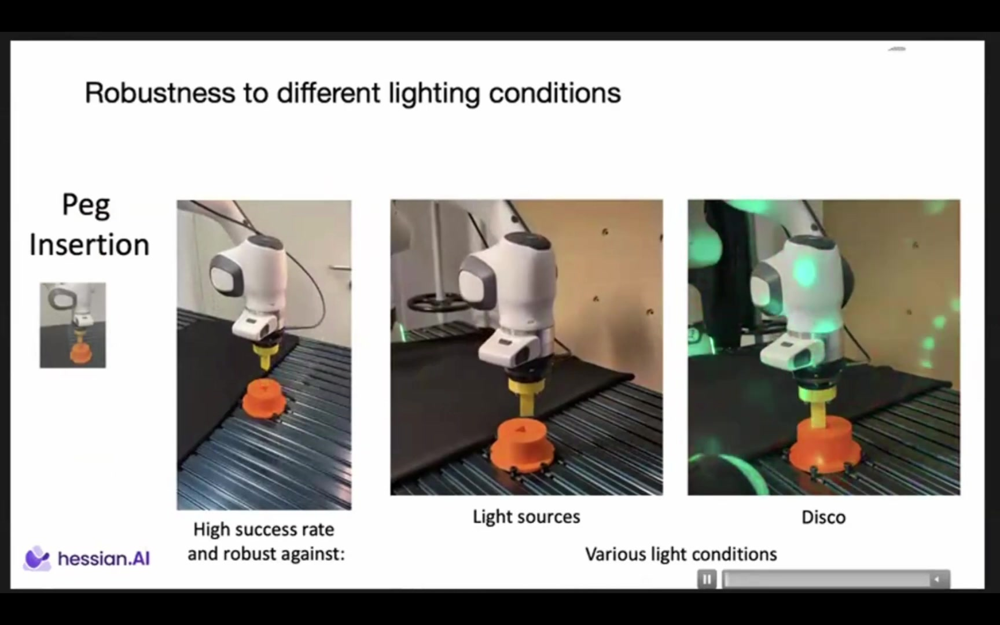
가장 흥미로운 결과다. 실세계에서 시뮬레이션 없이 데모 20개와 무작위 데이터 2,000 샘플로 인코더를 사전학습한 뒤 로봇 혼자 RL을 돌려 55분 만에 peg-in-hole 정책을 얻었다. 그런데 조명 변화로 학습한 적이 전혀 없는데도 다양한 조명 조건과 "디스코" 조명에 강건했다. 표현이 배경 노이즈와 무관하게 과제에 중요한 것을 담게 되었기 때문이다. 가림에도 강건(카메라가 없어도 수행)하고 외력에도 강건하며, 컨트롤러의 임피던스 파라미터를 바꿔도 작동했다.00:27:20 — 큐브 밀기와 뜻밖의 발견
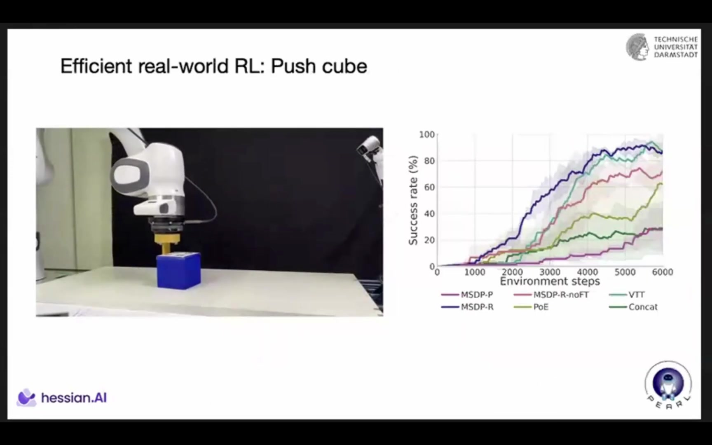
무게중심이 바뀌는 큐브를 미는 과제에서는 예상과 다른 결과가 나왔다. 다음 관측을 예측하는 것보다 현재 다중감각 판독을 재구성하는 편이 더 좋았다. 카메라가 큐브의 내부 상태를 정확히 추론할 수 없는 설정 때문으로 보이며, 더 조사가 필요하다고 덧붙인다.주요 내용 요약
핵심 포인트
- "모방학습은 정책을 과소결정한다" 는 것이 발표 전체의 축이다. 데모는 무엇을 할지만 말하고 목표·감지 대상·잘함의 기준을 말하지 않는다.
- 1966년 Able Mabel 비유가 문제의 지속성을 보여준다. 60년간 바뀐 것은 원격조작 데이터로 모방학습을 한다는 점뿐이다.
- 대칭은 데이터로 배우지 말고 아키텍처에 심어라. 양팔 로봇의 형태학적 대칭을 등변 네트워크로 두면 한 팔의 경험이 자동으로 다른 팔의 경험이 되며, 비대칭 역할 과제에서 이득이 가장 크다.
- 분해 후 증류가 반복되는 패턴이다. 하위 과제별 전용 정책으로 탐색을 집중시키고, 이를 hand-agnostic 조정자로 증류해 장면 기하만으로 역할을 배정하게 만든다.
- 보상 설계를 재사용 가능한 항으로 표준화(align + contact + goal + reset)하면 새 환경 구축이 하루에서 한 시간으로 줄어든다.
- 준최적 컨트롤러도 훌륭한 데이터 원천이다. WBC를 최종 해가 아닌 prior로 쓰고 오프라인 RL이 좋은 구간을 이어 붙이면, 원격조작이나 실세계 학습 데이터 없이 zero-shot 80% 가 나온다.
- 접촉 정보는 직접 융합하면 실패한다. 자기지도 사전학습으로 표현을 먼저 만들고, 크로스 어텐션은 크리틱에만 두는 비대칭 구조가 핵심이었다.
- 표현 학습이 예상 밖의 강건성을 준다. 조명 변화를 학습하지 않았는데도 강건해진 결과는 도메인 랜덤화 없이 얻은 것이다.
기술적 내용
- SYMDEX: 양팔 로봇의 bilateral symmetry group에 대해 등변인 per-hand 정책 → 하위 과제별 전용 등변 정책 → hand-agnostic 단일 정책으로 증류. 2팔에서 4팔로 확장 가능. FoundationPose로 객체 자세를 추출해 실기 zero-shot 전이. (Li, Z. et al., CoRL/PMLR 2025)
- RLDC(합성 데이터 생성): 교사 학습(범용 보상) → 대규모 병렬 시뮬레이션에서 객체·외양·카메라·조명 랜덤화 → LVLM 기반 언어 라벨 변형 생성 → RGB-D/포인트 클라우드 입력 멀티태스크 diffusion policy로 증류.
- 일반화 보상: align(키포인트/affordance) + contact + flexible goal(종료 시 객체 자세) + reset. 들기·pick-and-place·서랍 삽입에 동일 적용. 설계 시간 과제당 ~1시간(궤적 기반 ~1일 대비).
- WHOLE-MoMa: 랜덤화 WBC로 데이터 생성 → 보상으로 궤적 점수화 → Q-chunked transformer critic + IQL + AWR 정책 추출 + diffusion transformer 정책 → 실기 zero-shot. IDQL은 이 설정에서 준최적. 실기 성능 양팔 서랍 80%, 캐비닛 68%.
- 자기지도 다중감각 사전학습: 과제 무관 무작위 놀이 데이터로 MSSP 인코더 사전학습(일부 센서 임베딩에서 (다음) 다중감각 관측 재구성 + 보조 손실) → 인코더 동결 → 크리틱에 학습 가능 쿼리 + 크로스 어텐션(비대칭 학습). 실세계 데모 20개 + 무작위 2,000 샘플로 사전학습 후 55분 만에 peg-in-hole 학습. (RA-L 게재)
Q&A 요지
- 자기 리셋이 가능한 과제(peg-in-hole)에서 얻은 표현을, 되돌릴 수 없는 과제(조립 등)로 어떻게 일반화하는가? Chalvatzaki는 reset-free RL을 강하게 지지한다고 답한다. 리셋을 과도하게 엔지니어링하는 것(로봇이 스스로 리셋하게 만들거나, 학생들이 뛰어다니며 장면을 되돌리는 것)보다 계층적 하위 목표 발견(hierarchical goal discovery)과 reset-free RL을 결합하는 쪽이 흥미롭다고 본다. 하위 목표 발견은 ML 커뮤니티에서 많이 연구된 주제이므로 로보틱스로 다시 가져올 만하다는 제안이다.
시사점과 한계
한계
- 대칭 기반 접근은 양팔처럼 명확한 형태학적 대칭이 있는 시스템을 전제한다. 대칭이 약하거나 없는 구조에는 그대로 적용되지 않는다.
- WHOLE-MoMa의 성능은 80%/68% 로, 본인도 "100% 성공률을 말하는 것이 아니다"라고 분명히 한다. 상업적 배치 기준(다른 발표에서 언급된 99%대)에는 못 미친다.
- 데이터 생성이 시뮬레이션 품질에 의존하며, 발표자 스스로 학습용 시뮬레이션 환경이 아직 초기 단계라고 인정한다.
- 다중감각 사전학습에서 다음 관측 예측이 현재 관측 재구성보다 나빴던 이유는 규명되지 않았고 추가 조사가 필요하다고 남겨둔다.
현장 적용 관점에서의 시사점
- "준최적 컨트롤러를 데이터 원천으로 쓴다"는 전략이 중장비에 가장 직접적으로 유효하다. 굴착기에는 이미 수십 년간 다듬어진 유압 제어 로직과 궤적 생성기가 있다. 이를 최종 해로 두지 않고 랜덤화해 대량의 준최적 궤적을 만들고, 오프라인 RL이 좋은 구간만 이어 붙이게 하는 접근은 원격조작 데이터 수집 없이 시작할 수 있는 현실적 경로다.
- "원격조작·실세계 학습 데이터 없이 zero-shot 배포" 라는 결과 자체가 중장비에 중요하다. 실기에서 탐색이 불가능한 도메인이므로, 시뮬레이션 준최적 데이터만으로 어디까지 갈 수 있는지를 보여주는 참조점이 된다.
- WBC가 특이점 근처의 무리한 자세로 가고 손잡이를 부순다는 관찰은 굴착기에도 대응된다. 다목적 최적화가 기구학적으로 무리한 해를 내는 문제, 그리고 그것이 장비 손상으로 이어지는 문제는 동일하다. 오프라인 RL이 명시적 지시 없이도 관절 여유를 확보하는 거동을 학습했다는 점이 특히 참고할 만하다.
- 재사용 가능한 보상 항(align + contact + goal + reset) 은 굴착 공정에도 옮길 수 있다. 버킷 정렬(align), 토양 접촉(contact), 적재 목표 자세(goal), 사이클 초기화(reset)로 대응시키면 공정별 보상 설계 부담이 줄어든다.
- 접촉 정보를 직접 융합하지 말고 사전학습으로 표현을 만들라는 교훈은 힘 센서를 쓰는 모든 시스템에 해당한다. 굴착기의 유압 압력 신호를 정책에 바로 넣기보다, 무작위 상호작용 데이터로 표현을 먼저 학습시키는 편이 낫다는 가설을 세울 수 있다.
- 비대칭 학습(크로스 어텐션은 크리틱에만) 은 구현 수준의 구체적 지침이라 그대로 시도해볼 가치가 있다.
- 다만 이 연구들은 모바일 매니퓰레이터 규모다. 80% 성공률로 실험실에서 문을 여는 것과, 같은 성공률로 수 톤 하중을 다루는 것은 실패 비용이 다르다.
관련 노트
- [[yt_Robert_Platt_Model_Matters_Leveraging_Geometry_요약]] — 같은 워크샵. 등변성을 귀납 편향으로 쓰는 문제의식이 정확히 겹치며, 이 발표는 그것을 양팔 형태학적 대칭에 적용한 사례로 읽을 수 있다.
- [[yt_Pulkit_Agrawal_On_RL_and_IL_요약]] — 같은 워크샵. "접촉을 최적화하라"는 주장과 이 발표의 접촉 사전학습이 맞물린다.
- [[yt_David_Held_RL_Case_Study_Robot_Assisted_Dressing_요약]] — 같은 워크샵. 시뮬레이션과 실세계의 역할 분담이라는 공통 주제.
- [[yt_Jason_Ma_RL_for_Real-World_Production_Robotics_요약]] — 같은 워크샵. 데이터를 어디서 얻을 것인가에 대한 다른 답(사람 개입 기반 능동 학습).